Alpha Cloud - Alpha Anywhere Developer's Guide
Why shouldn't I use Alpha Cloud test databases in production?
About Test Databases
Managing Test Servers and Databases
Creating a Test Database Server
Deleting a Test Database Server
Creating a Test Database
Deleting a Test Database
Installing the Northwind Sample Database
Backing Up a Test Database
Restoring a Test Database
Getting Database Connection Strings
Accessing Your Test Database from Third Party Tools
Alpha Cloud test databases are included with your subscription to simplify getting started with development.
As such, we do not recommend or support using them in production. We do recommend using a Database as a Service product such as Amazon AWS Relational Database Services (RDS) as these products offer a number of important facilities not found in Alpha Cloud test databases.
Limitations of Alpha Cloud Test Databases:
- Security - TLS connections are not supported. Alpha Cloud test databases use SSH tunneling to create a secure channel to our cluster, but within the cluster, TLS is not implemented. Your production database should support secure connections all the way to the database server that encrypt data in transit.
- Latency - All test databases are currently deployed in Amazon region US-East-1 (Virginia). If you are deploying to a different region, you will experience delays in queries due to the geographic distance between your deployment and the test database.
- Performance - Alpha Cloud test databases are deployed on a limited CPU and memory configuration . A production database often requires larger instances.
- Availability - Alpha Cloud test databases are deployed as a single replica in a Kubernetes cluster. For maximum availability, a production database requires multiple instances in multiple data centers.
- Recoverability - Alpha Cloud test databases may be backed up manually using the available dialogs, but there is no automated backup. Production systems should be backed up automatically and frequently and need to be restorable using point-in-time recovery.
- Privacy - Because Alpha Cloud test databases are currently deployed in Virginia, USA, storing customer data there may be in violation of privacy rules and regulations for the country of their residence. Production systems must honor the appropriate locality rules for customer data. Test databases should never contain private customer data and should never contain credit card information!
Your Alpha Cloud subscription includes one or more test database servers.
As of this writing, you can create one server of each of the following databases:
- MariaDB
- PostgreSQL
- SQL Server
You can create multiple databases on each database server.
Space is limited, and the databases are for use in testing only.
As test servers and databases, the following restrictions apply:
- Space is limited. Currently each server is provisioned with 1GB of space for databases.
- Server performance is limited and does not scale.
- You can make your own backups and restore data using the Alpha Cloud dialogs, but there is no automated backup or recovery.
- There is reasonable, but minimal security. Data is not encrypted either in transit or at rest.
Note: Storing confidential data on these servers may be a violation of local law.
Important: To manage your test databases you must have Subscription level permissions.
Connecting to your database requires only a username and password with appropriate access permission.
As of this writing Alpha Cloud Test Database Servers are run on a Kubernetes cluster on the Google Cloud.
Each server is run as a separate Docker container instance with fixed memory and CPU constraints.
We have found Kubernetes to be a very responsive orchestration environment for small servers.
We chose the Google (GKE) cluster because it had a very well thought out management interface,
and because Google is the original developer of Kubernetes.
Access to your test database is provided through an SSH2 tunnel.
We chose this approach because it greatly simplifies management of public IP addresses and DNS names and limits direct connections from unsecured clients.
You can access your test databases using the SSH connection feature that is built into Alpha Anywhere Data Access Objects.
Connections to your test databases can be established from your development environment, from Alpha Cloud, and using third-party tools, as discussed below.
Using the Alpha Cloud dialogs, you can manage database servers and databases.
To manage test servers and databases:
- Click on the Alpha Cloud toolbar icon in the web control panel and select "Advanced" and
then "Subscription Test Databases" from the drop down menu as shown below.
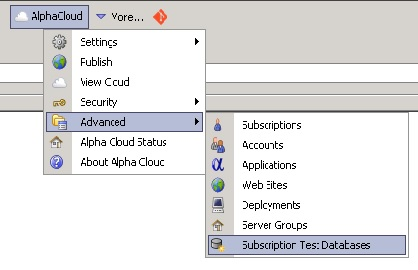
- The "Manage Test Databases dialog will display.
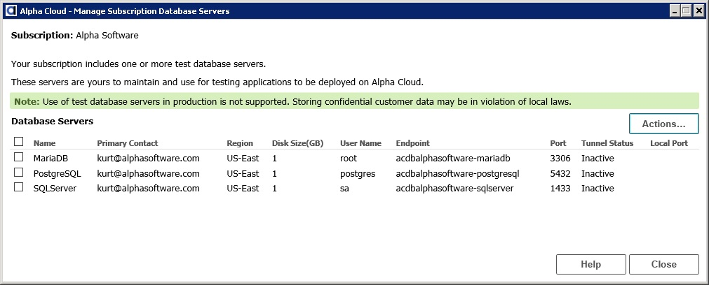
- Click on the button to the right labeled "Actions..." to display a menu of actions.
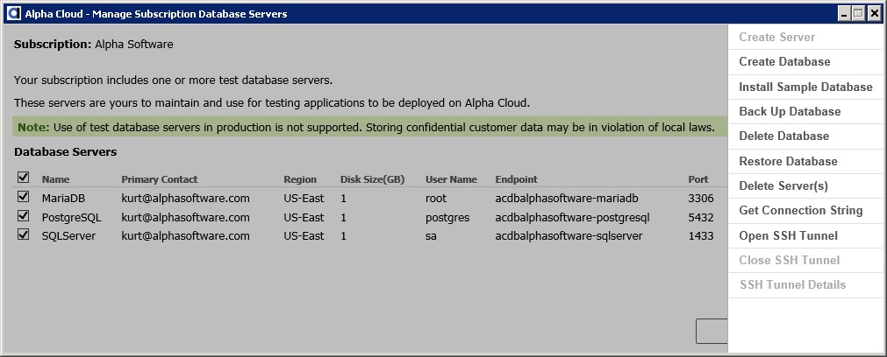
The items on the menu that are enabled will vary depending on how many database servers you have created
and selected
and whether or not you have active SSH tunnels.
- If you have one or more databases already created, you can select them individually
by clicking the checkbox to the left of each database,
or select them all by clicking the checkbox at the top of the first column on the left.
Using the Alpha Cloud dialogs, you can create one database server of each type supported.
To create one or more test database servers:
- Open the Managing Test Databases dialog as shown in
Managing Test Servers and Databases
- Open the menu by clicking on the "Actions..." button to the right.
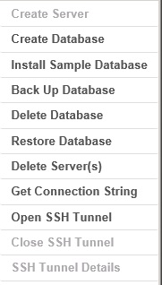
- If there is a server type that you have not created yet, the Create Server option will be enabled.
- Select Create Server Server from the menu.
- The Create Subscription Database Server dialog will be displayed.
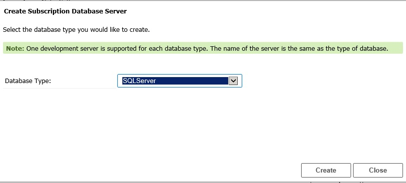
- Select the database type for the new server from the drop-down list box.
- Click OK to create the server.
- A dialog will display confirming that the server has been created.
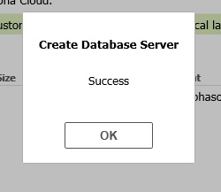
- When you click OK you will be returned to the Manage Subscription Database Servers dialog.
Your new server will be listed.
Once you have created one or more servers, you can create databases on those servers.
To create one or more test databases:
- Open the Managing Test Databases dialog as shown in
Managing Test Servers and Databases
- Select one or more database servers by clicking the checkbox to the left of each server, or select all of them
by clicking on the checkbox above the left-most column.
- Open the menu by clicking on the "Actions..." button to the right.
- Select Create Database from the menu.
- The Create Subscription Database dialog will be displayed.
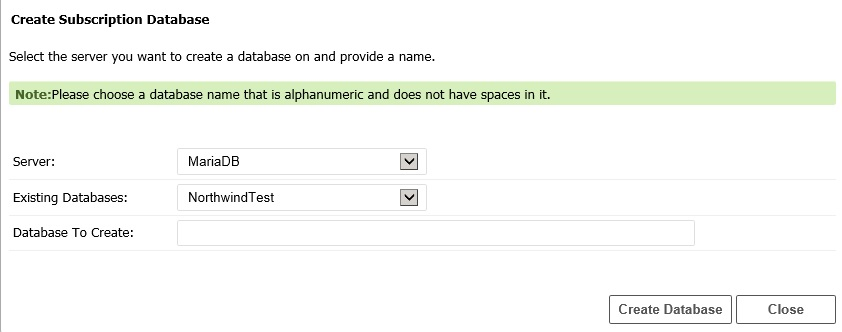
- Select the database server to create the database on from the list in the Server drop-down.
Note: Only the database servers you selected will be listed in the drop-down.
- Enter a name for your new database in the text box labeled Database to Create.
Database names should be alpha numeric characters starting with an alphabetic character.
Note: You can drop down the list of existing databases to see what you have already created.
- Click the button labeled Create Database to create the new database.
- You will be prompted for permission to create the database.
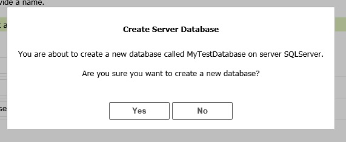
- Click Yes to create the database.
- A dialog will display confirming that the database has been created.
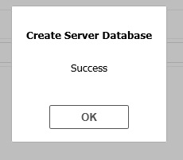
- Click OK to return to the Create Subscription Database dialog.
- You can create multiple databases from the Create Subscription Databases dialog.
- When you are done creating databases, click Close to return to the Manage Subscription
Database Servers dialog.
Once you have created a server, you can install the Northwind sample database into a new or existing database on your server.
Alpha Cloud will use the restore capability of the database type of your server to restore the sample database for you.
Important: All data on the target database will be deleted during the installation process.
Existing data cannot be restored later.
If you are installing the sample data to an existing database, be sure you have backed up any data you wish to keep.
To install the Northwind sample database:
- Open the Managing Test Databases dialog as shown in
Managing Test Servers and Databases
- Select one or more database servers by clicking the checkbox to the left of each server, or select all of them
by clicking on the checkbox above the left-most column.
- Open the menu by clicking on the "Actions..." button to the right.
- Select Install Sample Database from the menu.
- The Install Sample Data for Northwind dialog will be displayed.
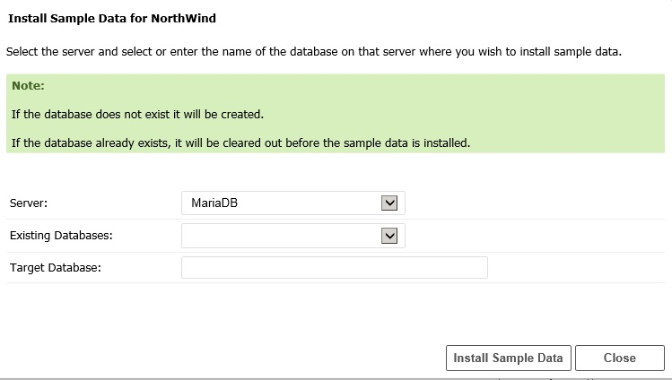
- Select the database server you want to install sample data on from the list in the Server drop-down.
Note:
- Only the database servers you selected will be listed in the drop-down.
- If you have existing databases on the selected server, the Existing Databases drop-down
will be populated with the list of databases.
- If you want to install the samples into an existing database, select the database from the
Existing Databases drop-down. The selected name will be copied into the Target Database text box.
- You can create a new database by typing a new name you want into the Target Database text box.
Database names should be alpha numeric characters starting with an alphabetic character.
- Click the button labeled Install Sample Data to install Northwind into the new or selected database.
- You will be prompted for permission to install the sample data into the database.
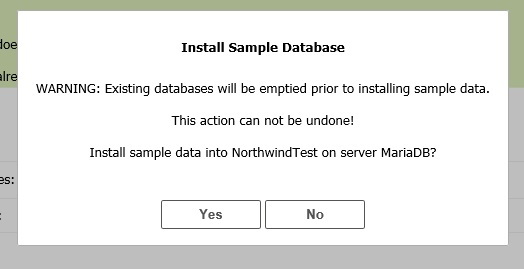
- Click Yes to install the sample data.
- A dialog will display confirming that the sample data has been installed in the database.
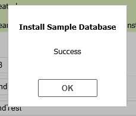
- Click OK to return to the Install Sample Data for Northwind dialog.
- You can install the Northwind sample data into multiple databases from the Install Sample Data
for Northwind dialog.
- When you are done installing Northwind data, click Close to return to the Manage Subscription
Database Servers dialog.
Any of your test databases can be backed up to a file on your development computer.
Backups are done with the native backup facility of the database server.
The format of the file will depend on the database type you are backing up.
Note:
- MariaDB databases will be backed up to a SQL script in text format.
- PostgreSQL databases will be backed up in compressed format, making them quite compact.
- SQL Server databases will be backed up in a BAK file format. SQL Server Express is used for test databases and does not support compression.
Important: All data in the local file your select will be replaced during the backup process.
To back up a test database:
- Open the Managing Test Databases dialog as shown in
Managing Test Servers and Databases
- Select one or more database servers by clicking the checkbox to the left of each server, or select all of them
by clicking on the checkbox above the left-most column.
- Open the menu by clicking on the "Actions..." button to the right.
- Select Back Up Database from the menu.
- The Back Up Subscription Database dialog will be displayed.
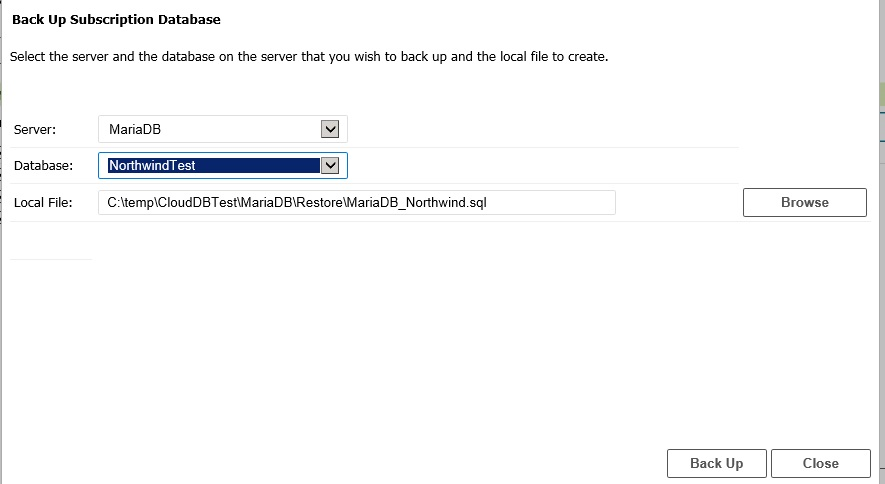
- Select the database server with the database you want to back up from the list in the Server drop-down.
Note:
- Only the database servers you selected will be listed in the drop-down.
- The Database drop-down will be populated with the list of databases on that server.
- Select the database to back up from the Database drop-down.
The server name and database will be formatted into a suggested file name and set into the
Local File text box.
- Enter the name of the local target file that you want to write the backed up database contents to in the
Local File text box.
You can type the value, or click on the Browse button to navigate to the file location and select it.
- Click the button labeled Back Up to back up the database.
- You will be prompted for permission to back up the database.
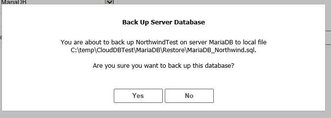
- Click Yes to create the backup file.
Note: For most files, there will be a slight delay during which the backup is done.
If the file is fairly large, you will see the transfer progress displayed on the main dialog.
- A dialog will display confirming that the backup file has been created.
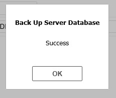
- Click OK to return to the Back Up Subscription Database dialog.
- You can back up multiple databases from the Back Up Subscription Database dialog.
- When you are done backing up databases, click Close to return to the Manage Subscription
Database Servers dialog.
You can delete any database from your test database server from the Alpha Cloud Manage Test Databases dialog.
Important: Once a database is deleted, it cannot be recovered.
Be sure you back up any database you want to keep the data for.
To delete a database:
- Open the Managing Test Databases dialog as shown in
Managing Test Servers and Databases
- Select one or more database servers by clicking the checkbox to the left of each server, or select all of them
by clicking on the checkbox above the left-most column.
- Open the menu by clicking on the "Actions..." button to the right.
- Select Delete Database from the menu.
- The Delete Subscription Database dialog will be displayed.
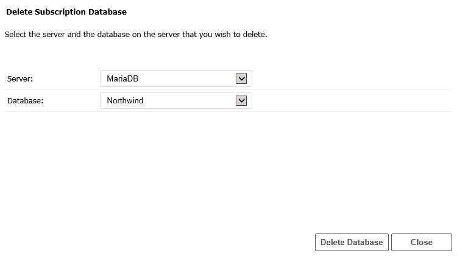
- Select the database server the database is on from the list in the Server drop-down.
Note: Only the database servers you selected will be listed in the drop-down.
- Select the database you wish to delete from the list of databases in the Database drop-down.
- Click the button labeled Delete Database to delete the selected database.
- You will be prompted for permission to delete the database.
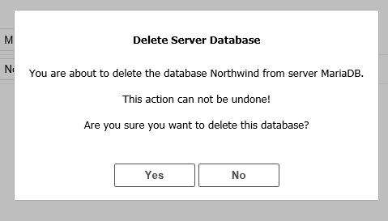
- Click Yes to delete the database.
- A dialog will display confirming that the database has been deleted.
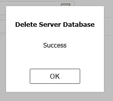
- Click OK to return to the Delete Subscription Database dialog.
- You can delete multiple databases from the Delete Subscription Databases dialog.
- When you are done deleting databases, click Close to return to the Manage Subscription
Database Servers dialog.
Any of your test databases can be restored from a file on your development computer.
Backups must have been created using the native backup facility of the database server you are restoring data from.
The format of the file will depend on the database type you are backing up and must be something the native restore command recognizes.
Note:
- MariaDB databases can be backed up to a SQL script in text format using MySQLDump or another tool.
- PostgreSQL databases can be backed up in compressed format, making them quite compact, using the pg_dump utility or an interactive tool.
- SQL Server databases should be backed up in a BAK file format. SQL Server Express is used for test databases and does not support compression, but the restore can read such a file. You can use the sqlcmd utility or the management user interface.
Important: SQL Server data is stored in named logical files. For your data to restore properly you need to back it up from a database that has a single data file and a log file.
Alpha Cloud will restore and rename the logical files to match the target database so that future backups and restores work properly.
If you have additional logical files in your backup, they will not be remapped and your database may not behave properly initially or after a backup and restore.
Important: All data on the target database will be deleted during the restore process.
Existing data cannot be restored later.
If you are restoring to an existing database, be sure you have backed up any data you wish to keep.
To restore data to a new or existing database:
- Open the Managing Test Databases dialog as shown in
Managing Test Servers and Databases
- Select one or more database servers by clicking the checkbox to the left of each server, or select all of them
by clicking on the checkbox above the left-most column.
- Open the menu by clicking on the "Actions..." button to the right.
- Select Restore Database from the menu.
- The Restore Database To Subscription Server dialog will be displayed.
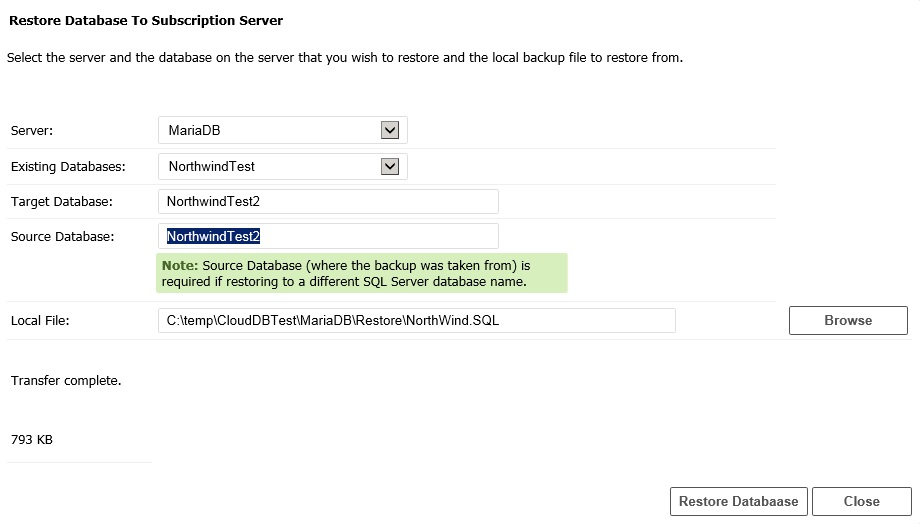
- Select the server you want to restore a database to from the list in the Server drop-down.
Note:
- Only the database servers you selected will be listed in the drop-down.
- If you have existing databases on the selected server, the Existing Databases drop-down
will be populated with the list of databases.
- If you want to restore into an existing database, select the database from the
Existing Databases drop-down. The selected name will be copied into the Target Database text box.
- You can create a new database by typing a new name into the Target Database text box.
Note: Database names should be alpha numeric characters starting
with an alphabetic character.
- For SQL Server Only: If your are restoring from a database with a different name, be sure
to provide the name of that database in the Source Database text box.
This information is used to remap the logical files for the data and the log during the
restore process.
As discussed above, backups with additional or custom logical files require additional logic to remap.
To restore these databases as test databases you must use the SQL Server commands or tools to convert
the logical files to the default data and log only. See the SQL Server documentation for
more information.
- Enter the name of the source file that contains the backup file that you want to restore from into
the Local File text box.
You can type the value, or click on the Browse button to navigate to the file and select it.
- Click the button labeled Restore to restore your data into the new or selected database.
- You will be prompted for permission to restore the data into the database.
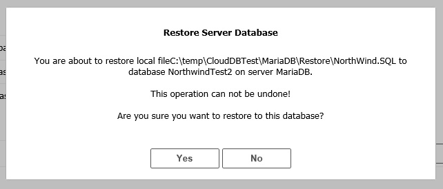
- Click Yes to restore the database.
Note: For most files, there will be a slight delay during which the restore is done.
If the file is fairly large, you will see the transfer progress displayed on the main dialog.
- A dialog will display confirming that the restore has completed successfully.
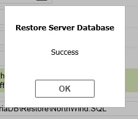
- Click OK to return to the Restore Database To Subscription Server dialog.
- You can restore multiple databases from the Restore Database to Subscription Server dialog.
- When you are done restoring databases, click Close to return to the Manage Subscription
Database Servers dialog.
Using the Alpha Cloud dialogs, you can delete a database server at any time.
Important: Once a server is deleted, all databases on it are permanently removed and cannot be restored!
To delete one or more test database servers:
- Open the Managing Test Databases dialog as shown in
Managing Test Servers and Databases
- Select one or more database servers by clicking the checkbox to the left of each server, or select all of them
by clicking on the checkbox above the left-most column.
- Open the menu by clicking on the "Actions..." button to the right.
- Select "Delete Server(s)" from the menu.
- You will be prompted for permission to delete the server or servers.
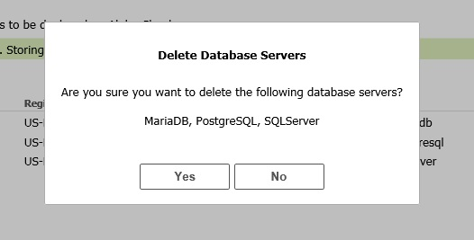
- Click Yes to delete the server(s).
- A dialog will display confirming that the servers have been deleted.

Using the Alpha Cloud dialogs, you can view connection information and create named database connection strings.
To manage database connection strings for test database servers:
- Open the Managing Test Databases dialog as shown in
Managing Test Servers and Databases
- Select one or more database servers by clicking the checkbox to the left of each server, or select all of them
by clicking on the checkbox above the left-most column.
- Open the menu by clicking on the "Actions..." button to the right.
- Select "Get Connection String" from the menu.
- The Subscription Server Database Connection Strings dialog will be displayed.
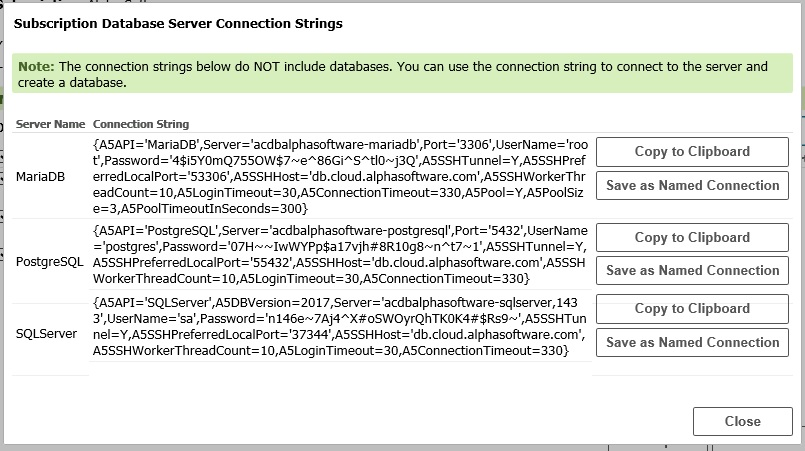
- The base connection string will be displayed for each server you selected.
The connection string will be quite long because it contains all of the information
required to tunnel through to the database using SSH2.
You can copy the connection string to the clipboard and paste it into a script by clicking the
Copy to Clipboard button to the right of a connection string.
A more useful thing to do is to create a named connection string.
To create a named connection, click on the
Save as Named Connection button to the right of the connection string.
- The Save Subscription Server Connection String as Named Connection dialog will be displayed.
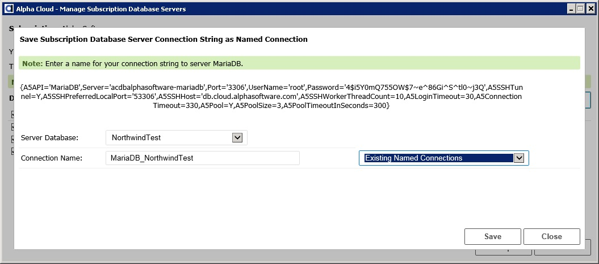
- The Server Database drop down is initially set to "--none--".
If you create a named connection with this value set, no database will be selected.
This can be useful for connections to the server itself, but in general you will
want to select a database from the drop-down.
If you select a database name, a suggested connection name will be formatted and set into the
Connection Name text box.
- You can accept the formatted name or enter a name for your connection into the Connection Name
text box.
The drop-down to the right titled "Existing Named Connections" has a list of named connections found
in your current web project.
If you select an existing name, it will be copied into the Connection Name text box.
- Click the Save button to save your named connection.
- A dialog will be displayed confirming that your named connection has been added to your
web project.
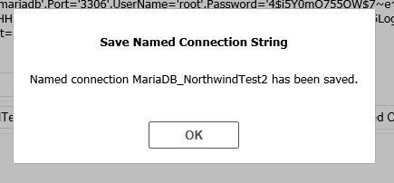
- You can add named connections for multiple databases without leaving the
Save Subscription Server Connection String as Named Connection dialog.
- When you are done adding named connections, click the Close button to return to the
Subscription Server Database Connection Strings dialog.
- When you are done working with connection strings, click Close to return to the Manage Subscription
Database Servers dialog.
All connections to test databases are made using an SSH2 tunnel. A tunnel provides a network path to a resource inside of another computing environment without exposing the resource to the internet directly. As discussed above, Alpha Cloud Test Databases use SSH2 tunnels to make management of clustered servers simpler. Although tunneling may seem intimidating at first, Alpha Anywhere manages the complexity for you where possible.
Once you have created connection strings to access your test database, Alpha Anywhere and your web project
can connect to the database using those connection strings and will automatically open a tunnel as needed.
Because opening a tunnel is an expensive operation time-wise, the tunnel is held open as long as the development environment or a application server is running.
You can make your database available to third party tools on the developer machine by opening an SSH2 tunnel from within Alpha Anywhere and providing the appropriate credentials to that tool. A tunnel makes your database appear to be local to the development machine. You will connect to "localhost" using a port that Alpha Anywhere assigns. This section will discuss how to open a tunnel for a database and how to provide a tool access to your database.
Important: Alpha Anywhere must be running to keep a tunnel open for other programs. Once you close Alpha Anywhere, the tunnel is closed automatically. To minimize the need to keep updating the connection configuration in your other tool, Alpha Anywhere remembers the most recent port used and attempts to open it each time you open a tunnel to your database.
Before a third party tool can access your database, you must open a tunnel.
If you connect to your database using an AlphaDAO connection string, a tunnel is automatically opened and will stay
open until Alpha Anywhere is closed.
You can explicitly open a tunnel using the Alpha Cloud dialogs to manage your test databases.
To open an SSH tunnel to your database server:
- Open the Managing Test Databases dialog as shown in
Managing Test Servers and Databases
- Select one or more database servers by clicking the checkbox to the left of each server, or select all of them
by clicking on the checkbox above the left-most column.
- Open the menu by clicking on the "Actions..." button to the right.
- Select "Open SSH Tunnel" from the menu.
- A tunnel will be opened for each server you have selected if the tunnel is not already open.
Once the tunnels have been opened you will see a dialog confirming that the open was successful.
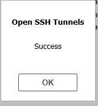
As noted before, opening a tunnel is an expensive operation.
This may take several seconds for each tunnel you open.
If you get an error indicating that there was a timeout, wait a few seconds and try again.
This can happen if you have just created your server as it can take a few seconds to spin up an instance. SQL Server tends to take longer to start than some others.
If you continue to get a timeout error please contact support at alphacloudbugs@alphasoftware.com
so we can work with you to diagnose and correct any issue with your server.
- Once a tunnel is open, you will see the Tunnel Status column of the server change to Active and
the Local Port column will contain the port in use for the tunnel.
In the section Getting SSH2 Tunnel Information for Third Party Tools
we will discuss how you can collect and provide the tunnel details to
a third party tool for accessing your database.
If you exit Alpha Anywhere, all SSH2 tunnels managed by Alpha Anywhere will be closed.
You can also close tunnels from the Alpha Cloud dialogs.
To manually close an SSH tunnel to your database server:
- Open the Managing Test Databases dialog as shown in
Managing Test Servers and Databases
- Select one or more database servers by clicking the checkbox to the left of each server, or select all of them
by clicking on the checkbox above the left-most column.
- Open the menu by clicking on the "Actions..." button to the right.
- Select "Close SSH Tunnel" from the menu.
- You will be prompted for permission to close any open tunnel on the selected servers.
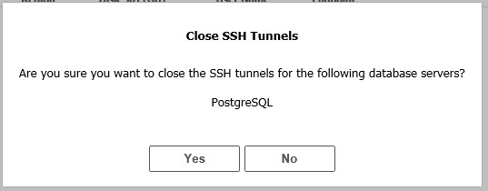
- Click Yes to close any open tunnels to the selected servers.
- Once the tunnels have been closed you will see a dialog confirming that the close was successful.
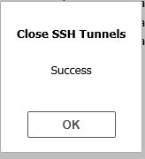
- Once a tunnel is closed, you will see the Tunnel Status column of the server change to Inactive and
the Local Port column will be cleared.
Using the Alpha Cloud dialogs, you can view and copy details that will help you set up a connection
to your test database from tools such as MySQL Workbench, PGAdmin4, and SQL Server Management Studio.
From the perspective of these tools, the database is local to the current machine.
Instead of the ports MariaDB, PostgreSQL and SQL server typically use (3306, 5432 and 1433),
you will connect to an open tunnel on created on the local machine using a local port defined by Alpha Anywhere.
The tunnel will take care of connecting to the right port on the database server within the test database cluster.
Third party development tools will always connect to your database using "localhost" and the port Alpha Anywhere
assigns to the tunnel.
Note: When connecting to your test database from SQL Server Management Studio, be sure to enter the server name
as localhost followed by a comma and then the port number provided. For example "localhost,51433", otherwise you will not be able to connect.
To retrieve information to be used in setting up a connection to your database from third party tools:
- Open the Managing Test Databases dialog as shown in
Managing Test Servers and Databases
- Select one or more database servers by clicking the checkbox to the left of each server, or select all of them
by clicking on the checkbox above the left-most column.
- Open the menu by clicking on the "Actions..." button to the right.
- Select "SSH Tunnel Details" from the menu.
- The Get Subscription Database Server SSH Tunnel Access Information dialog will be displayed.
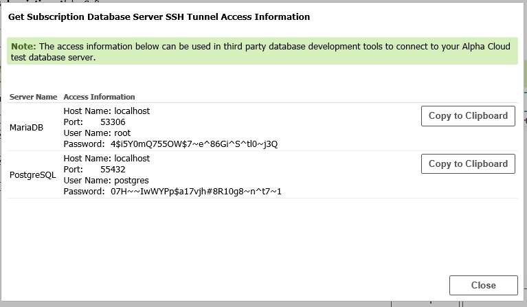
- For each server, the host name (always localhost) and port to use in connecting to the database
is provided.
The user name and password provided are for the administrative user.
You will most likely want to create additional users and grant them limited permissions for testing. You can substitute one of those users and passwords as well.
- You can copy the access details to the clipboard to save the information elsewhere.
To copy access information to the clipboard, click
Copy to Clipboard button to the right of a connection string.
The access information is formatted as you see it on the screen with an additional entry
for the name of the server.
- When you are done working with access information for your third party tools,
click Close to return to the Manage Subscription Database Servers dialog.